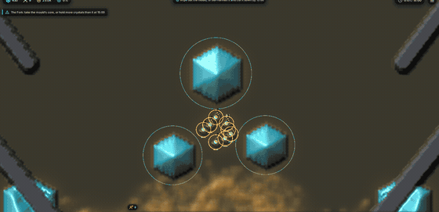
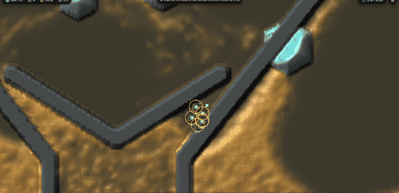
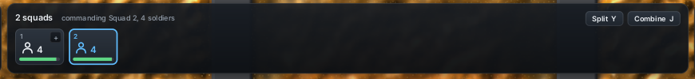
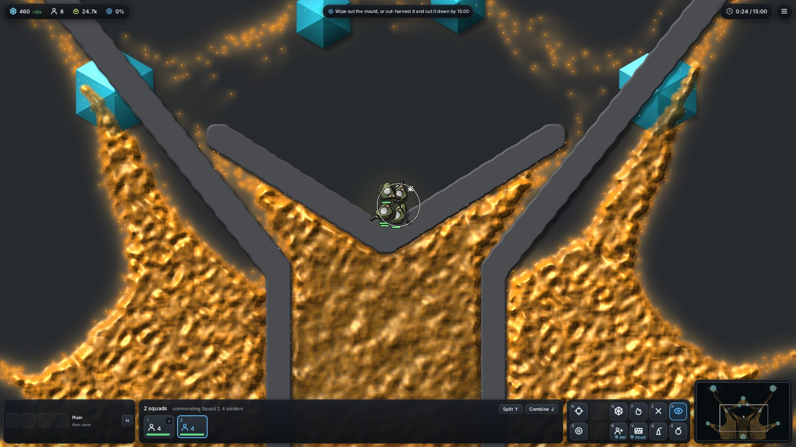

<title>Larder Squad Mode</title>
<meta name="claude:viewport-fit-sides" content="cover">
<link rel="stylesheet" href="https://fonts.googleapis.com/css2?family=Space+Grotesk:wght@500;700&family=Inter:wght@400;600&family=JetBrains+Mono:wght@400&display=swap">
<style>
/* Layout: one column of films, each with its counts beside it; a key strip on top. Dark-first like the game's HUD. */
:root {
  --bg: #12161b; --panel: #1b2129; --fg: #e8edf2; --muted: #93a0ad; --line: #2a333d;
  --accent: #60beff; --slime: #d9a85a; --good: #5ed684;
  --display: "Space Grotesk", "Segoe UI", system-ui, sans-serif;
  --body: "Inter", system-ui, sans-serif;
  --mono: "JetBrains Mono", ui-monospace, Menlo, monospace;
  color-scheme: dark;
}
@media (prefers-color-scheme: light) { :root:not([data-theme="dark"]) { --bg: #f3f5f7; --panel: #ffffff; --fg: #18202a; --muted: #5a6673; --line: #d9dee4; --accent: #1d7fc4; --slime: #9a6a1c; --good: #1f8a48; color-scheme: light } }
:root[data-theme="light"] { --bg: #f3f5f7; --panel: #ffffff; --fg: #18202a; --muted: #5a6673; --line: #d9dee4; --accent: #1d7fc4; --slime: #9a6a1c; --good: #1f8a48; color-scheme: light }
body { background: var(--bg); color: var(--fg); font: 15px/1.55 var(--body); }
main { max-width: 980px; margin: 0 auto; padding-block: 28px 48px; padding-left: max(16px, env(safe-area-inset-left, 0px)); padding-right: max(16px, env(safe-area-inset-right, 0px)); display: grid; gap: 28px; }
h1 { font: 700 30px/1.15 var(--display); margin: 0; text-wrap: balance; }
h2 { font: 600 19px/1.25 var(--display); margin: 0 0 6px; text-wrap: balance; }
p { margin: 0; max-width: 68ch; }
.lead { color: var(--muted); }
code { font: 13px var(--mono); color: var(--accent); }
.keys { display: grid; grid-template-columns: repeat(auto-fit, minmax(210px, 1fr)); gap: 8px; }
.key { background: var(--panel); border: 1px solid var(--line); border-radius: 8px; padding: 10px 12px; min-width: 0; }
.key b { display: block; font: 600 12px var(--mono); letter-spacing: .04em; color: var(--accent); text-transform: uppercase; }
.film { display: grid; grid-template-columns: minmax(0, 1.6fr) minmax(0, 1fr); gap: 18px; align-items: start; }
@media (max-width: 760px) { .film { grid-template-columns: 1fr; } }
.film img { width: 100%; border-radius: 6px; border: 1px solid var(--line); display: block; }
table { border-collapse: collapse; width: 100%; font-variant-numeric: tabular-nums; font-size: 13.5px; }
th, td { text-align: left; padding: 5px 6px; border-bottom: 1px solid var(--line); vertical-align: top; }
th { color: var(--muted); font-weight: 600; }
.tbl { overflow-x: auto; }
.note { color: var(--muted); font-size: 13.5px; }
.pill { display: inline-block; font: 600 11px var(--mono); padding: 1px 7px; border-radius: 99px; border: 1px solid var(--good); color: var(--good); }
</style>
<main>
  <header style="display:grid; gap:8px">
    <h1>Larder World squad mode</h1>
    <p class="lead">A separate mode, so the RTS round plays exactly as before. Start it with <code>larder-world mode=squads</code> or pick <b>Control: squads</b> on the start menu's options page. The films below come from a scripted hand (<code>hand=squads</code>) on the Fork, seed 1, rendered headless on software Vulkan, so the frame rate is not the game's.</p>
  </header>

  <section>
    <h2>Controls</h2>
    <div class="keys">
      <div class="key"><b>WASD</b>Steer the squad you control. The camera follows; Space brings it back after you pan away.</div>
      <div class="key"><b>Hold left mouse</b>Every soldier in the squad fires at the cursor on the same beat. The squad faces the cursor.</div>
      <div class="key"><b>Right click</b>Send the squad there in formation. On a crystal it stands guard; Ctrl + right click drains it.</div>
      <div class="key"><b>1-9 · Ctrl + wheel</b>Switch squads. A squad keeps its number while it lives; it floats over it, and the one you control has a star. The plain wheel zooms.</div>
      <div class="key"><b>Y</b>Split. The half nearer the cursor becomes a new squad, and control moves to it.</div>
      <div class="key"><b>Shift + drag · J</b>Pull the boxed soldiers out into a new squad. J merges the nearest squad within 24 cells.</div>
      <div class="key"><b>T</b>Formation: blob (the default), line, wedge or ring.</div>
      <div class="key"><b>B</b>Buy a soldier. It joins the squad you control, at its side.</div>
    </div>
  </section>

  <section class="film">
    
    <div style="display:grid; gap:10px; min-width:0">
      <h2>65 seconds at 4x speed</h2>
      <p class="note">Eight soldiers are sent to the slime as one squad. The anchor finds its way round the V wall, and the squad keeps together while it walks. From 15 s the squad volleys at the thickest slime in range. At 25 s it splits: four soldiers go to guard a clean crystal while the other four are let go and fight on their own. At 37 s control goes back to the fighting half.</p>
      <div class="tbl"><table>
        <tr><th>Game time</th><th>Shots</th><th>Walkers killed</th><th>Bank</th><th>Mould</th></tr>
        <tr><td>1 s</td><td>0</td><td>0</td><td>430</td><td>25,000</td></tr>
        <tr><td>16 s, volley starts</td><td>104</td><td>1,441</td><td>445</td><td>23,689</td></tr>
        <tr><td>25 s, split</td><td>240</td><td>2,477</td><td>445</td><td>22,961</td></tr>
        <tr><td>37 s, back to fighters</td><td>316</td><td>2,778</td><td>460</td><td>23,626</td></tr>
        <tr><td>66 s</td><td>584</td><td>4,680</td><td>482</td><td>27,200</td></tr>
      </table></div>
      <p class="note">Between 16 and 25 s the controlled squad of eight fired 136 shots, about 15 a second (eight soldiers at twice the base rate). After 37 s, four controlled soldiers plus four guards firing on their own fired about 9 a second. Guarding paid 37 into the bank between 25 and 55 s. No soldier was lost.</p>
    </div>
  </section>

  <section class="film">
    
    <div style="display:grid; gap:10px; min-width:0">
      <h2>The volley, 8 seconds at 1x</h2>
      <p class="note">From 14 to 22 s, every 1/15 of a game second. All eight soldiers fire on the same beat at one point, and the craters merge into one hole. The controlled squad fires twice as often as others, with a strike 1.4 times as wide, so the boost shows as more bullets and bigger holes.</p>
      <div class="tbl"><table>
        <tr><th>Game time</th><th>Shots</th><th>Walkers killed</th></tr>
        <tr><td>14 s</td><td>81</td><td>853</td></tr>
        <tr><td>22 s</td><td>192</td><td>2,235</td></tr>
      </table></div>
      <p class="note">111 shots killed 1,382 walkers in 8 s, about 12 walkers per shot.</p>
    </div>
  </section>

  <section style="display:grid; gap:10px">
    <h2>The squads, a tile each</h2>
    
    <p class="note">In squad mode the bottom middle panel shows a tile per squad, where the RTS round shows a card per soldier. A tile has the squad's hotkey, its soldiers and their health; the squad you command is outlined. Click a tile to command that squad; the + on a tile brings that squad into yours. <b>Split</b> sends the front half off as a new squad you command, and <b>Combine</b> brings the nearest squad in, however far. A button that can't act is greyed, and its tooltip says why. Hovering a tile says what the squad is doing (holding, moving or firing).</p>
    <p class="note">Fork, seed 1, 24 s, 1600x900: the squad of 8 split into two squads of 4. The model and HUD together take 0.06 ms a frame on software Vulkan. A squad keeps its number while it lives, as a control group does.</p>
    
  </section>

  <section style="display:grid; gap:8px">
    <h2>Crystals without the larder <span class="pill">drain or guard</span></h2>
    <p>Squad mode has no larder. A squad <b>guarding</b> a crystal (standing by it, with at most 8 walkers on it) earns 1/120 of the crystal's remaining charge every second, and that never uses the crystal up, so guarding pays more in the long run. A squad <b>draining</b> a crystal banks its charge as it takes it, nothing is carried, and the crystal is gone for the slime too. Guarded crystals get a green ring.</p>
    <p class="note">Not built yet: a short call-in delay for bought soldiers. The numbers (2x fire rate, 1.4x strike, the 120 s guard, 0.75 squad pace) are first guesses, to be retuned after you play it.</p>
  </section>
</main>
